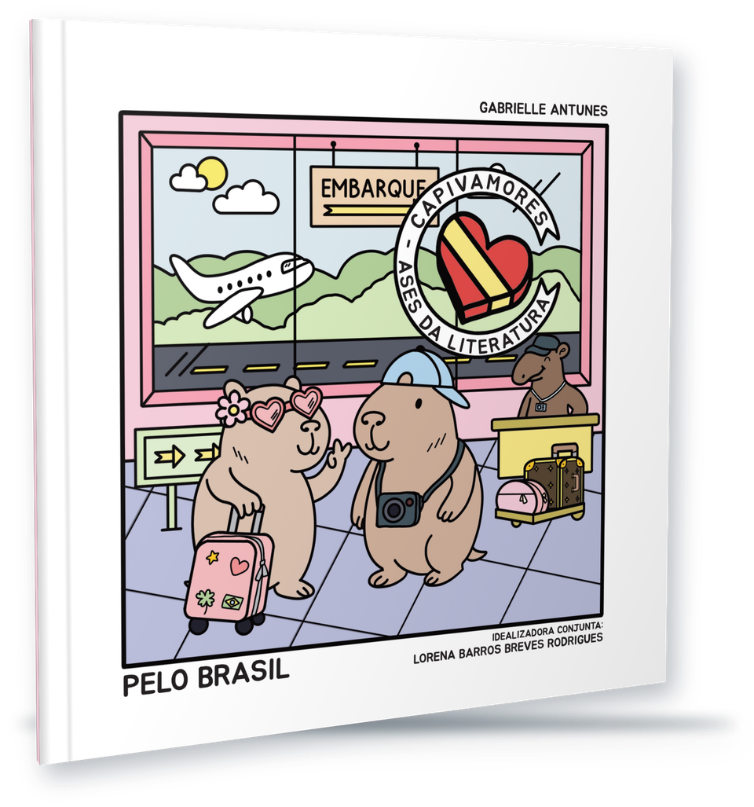
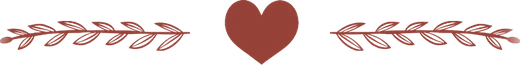
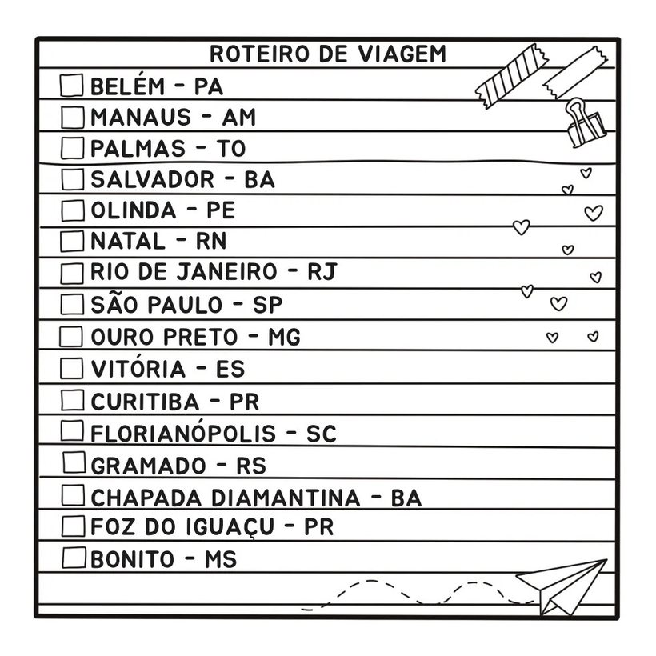
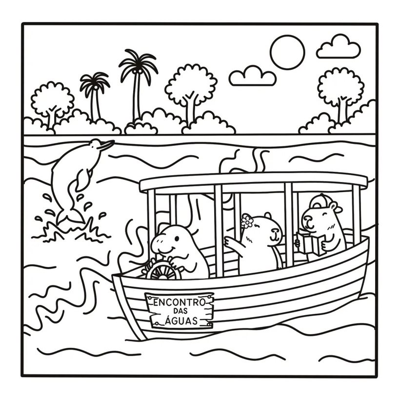
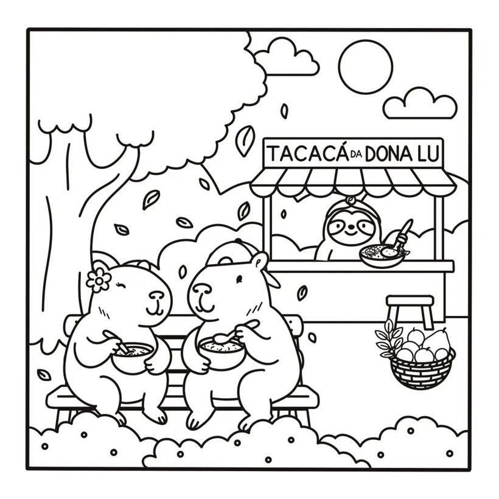
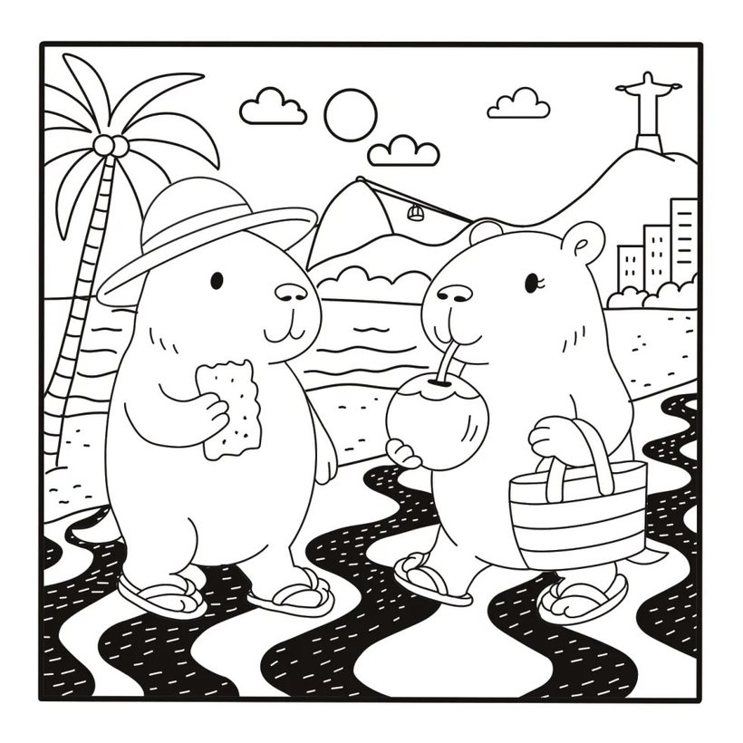
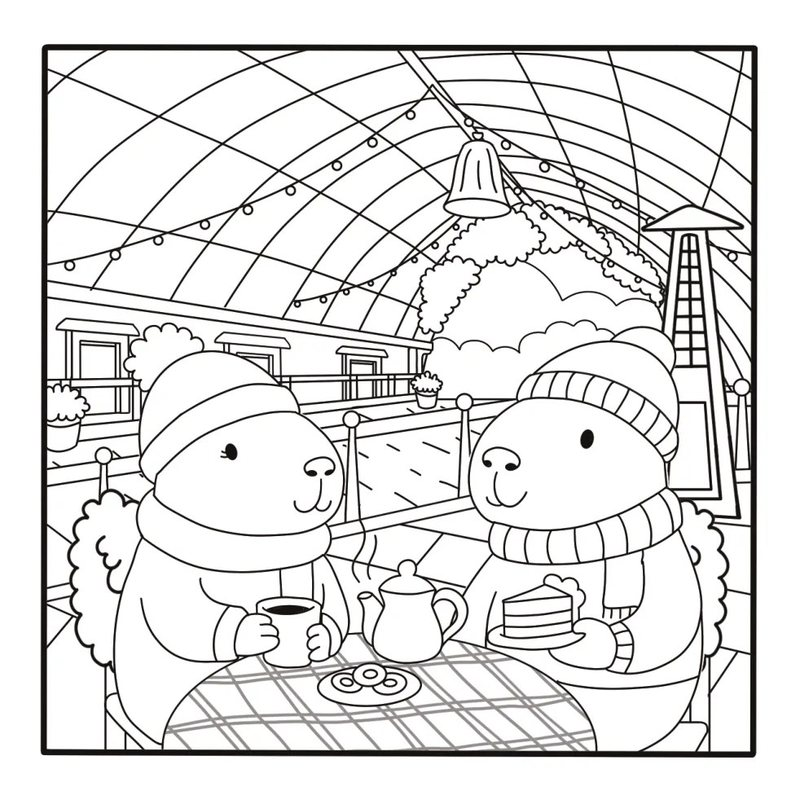
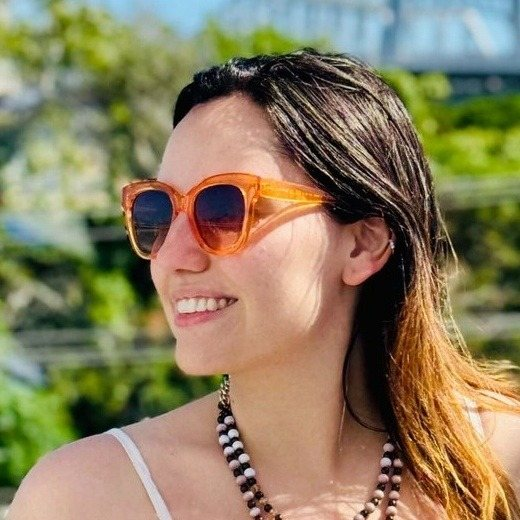
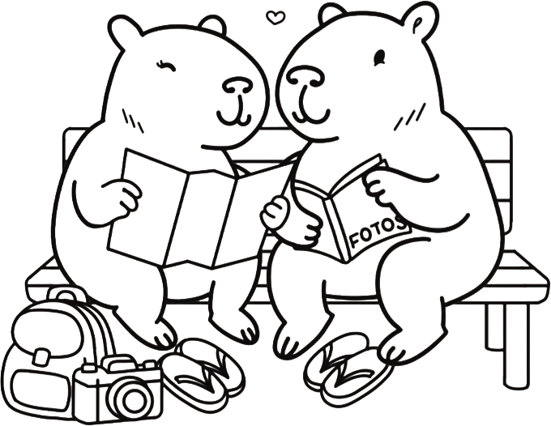

Gabrielle Antunes
Capivamores – pelo Brasil

Um casal de capivaras, uma mala cheia de adesivos e o Brasil inteiro para colorir.
Um livro de colorir em que duas capivaras viajam por cenários inspirados em paisagens reais do país, do Encontro das Águas ao calçadão do Rio, em páginas de traço limpo e cheias de detalhes.
Garanta o seu exemplar
Próximo embarque: o Brasil inteiro.
Na sala de embarque, ela está de óculos de coração e flor na orelha, puxando uma mala cor-de-rosa coberta de adesivos. Ele usa boné azul e leva a câmera a tiracolo. Lá fora, o avião já decola. O casal de capivaras está pronto para viajar, e o destino é o próprio país.
O roteiro de viagem passa por Belém, Manaus, Salvador, Olinda, Rio de Janeiro, Ouro Preto, Curitiba, Gramado, Chapada Diamantina, Foz do Iguaçu, Bonito e outros lugares. Página a página, as capivaras andam de barco, provam um tacacá, tomam água de coco no calçadão e se agasalham para um chá quentinho.
São cenas em preto e branco, de linhas claras e muitos pequenos elementos, esperando as cores de quem pega o lápis ou a canetinha. Um convite para relaxar, colorir e se encantar com a diversidade natural e cultural do Brasil, uma paisagem de cada vez.
Espie as páginas
Cada página é um cenário para colorir, com o casal de capivaras sempre no meio do passeio.

O roteiro de viagem: de Belém a Bonito, um quadradinho para cada destino.

De barco, a caminho do Encontro das Águas.

Uma pausa para o tacacá da Dona Lu.

Calçadão, água de coco e o Cristo lá no alto.
Para colorir junto e conversar sobre o caminho
Traço limpo, muitos detalhes
Linhas claras e páginas bem preenchidas, com pequenos elementos que fazem o colorir render: bom para lápis de cor, canetinha e paletas criativas.
Um roteiro pelo país
Os cenários são inspirados em paisagens reais, do Norte ao Sul. Dá para colorir conversando sobre cada lugar, marcar os destinos no roteiro e sonhar com a próxima viagem.
Cultura que cabe na página
Entre um destino e outro tem tacacá, água de coco, barco e chá quentinho: a diversidade do Brasil aparece também nos sabores e nos costumes.

Com desenhos adoráveis e cenários inspirados em paisagens reais, este livro é um convite para relaxar, colorir e se encantar com a diversidade natural e cultural do Brasil.

Sobre a autora
Gabrielle Antunes
Gabrielle Antunes nasceu em São Paulo, em 1997, e passou grande parte da vida entre diferentes culturas, depois de viver oito anos fora do Brasil. Talvez por isso tenha desenvolvido um carinho ainda mais profundo pelas brasilidades, pelas memórias afetivas e pelos pequenos detalhes que tornam a cultura brasileira tão única.
Apaixonada por criatividade, ilustração e pelo universo dos livros, encontrou nas capivaras uma forma divertida e acolhedora de transformar sentimentos em arte. Assim nasceram os Capivamores. Capivamores – pelo Brasil é o primeiro livro da coleção e representa um reencontro com as suas raízes.
Escolha as cores e embarque nessa viagem.
Dezesseis destinos no roteiro, um casal de capivaras apaixonado por viajar e muitas páginas esperando cor.
Perfeito para quem ama arte, bichinhos e viagens.
Garanta o seu exemplar